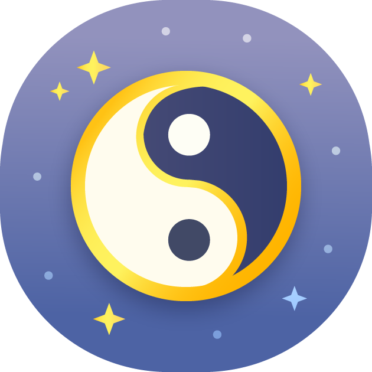

9:41
Các mặt trong đời sống
Khám phá thêm

Vận Hạn
Năm 2027
Tử Vi
Tổng Quan
Tài Chính
& Đầu Tư
Nghề Nghiệp &
Sự Nghiệp
Tư Vấn
Tình Duyên
Lá Số
Tử Vi
 Tử Vi
Tử Vi Tài Chính
Tài Chính Nghề Nghiệp &
Nghề Nghiệp & Tư Vấn
Tư Vấn Lá SốTử ViTài ChínhNghề Nghiệp &Tư VấnLá Số
Lá SốTử ViTài ChínhNghề Nghiệp &Tư VấnLá Số